Menu
CategoriesAll ⬆
⬇
⬆
⬇
⬆
⬇
⬆
⬇
DVRST - TRANSITION TO REALITY(New)
DVRST - Close Eyes
DVRST - Dream Space
DVRST - Motion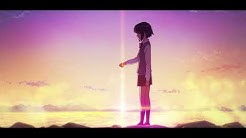
IKIRU, DVRST - Behelit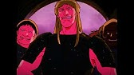
DVRST - YOUR NAME
Dxrk ダーク - CAUTION
Dxrk ダーク - CLOUD
Dxrk ダーク - DO OR DIE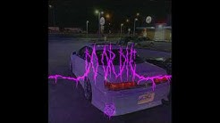
Dxrk ダーク - R34
Dxrk ダーク - RAVE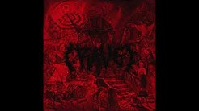
Dxrk ダーク - RAVE (Slowed Transition)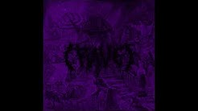
Dxrk ダーク - ROOF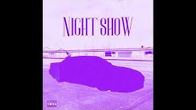
Dxrk ダーク - terrorwave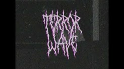
Freddie Dredd - GTG
Freddie Dredd - Darko
Freddie Dredd - Devil's Work
Freddie Dredd - All Alone
Ghostface Playa - Why Not
Ghostface Playa - HERE WE GO AGAIN
Ghostface Playa - Graveyard
Ghostface Playa - KILLKA
Ghostface Playa - HOLD THE FUCK UP
Ghostface Playa, Pharmacist - I Don't Give a Fuck
Ghostface Playa - Swaggin' at the Partment
Ghostface Playa - Triple Six
l19u1d - BLACK BLOOD
l19u1d - I AM THE KING
l19u1d - MASK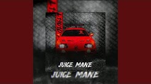
l19u1d - MEMPHIS AREA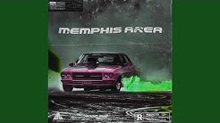
l19u1d - PERFECTION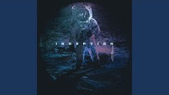
ZODIVK - Black Heart
ZODIVK - Devil Eyes
ZODIVK - My Divk
HENSONN - SAHARA
HENSONN - SAMURAI
Fkbambam, Hensonn - DARK SAUCE
KUTE - AVOID ME
KUTE - AVOID ME (Slowed Reverb)
KUTE, OBLXKQ - Dreamcore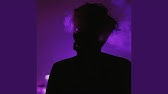
KUTE - MIND SPLIT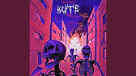
KUTE, BLESSED MANE - NIGHT RIDE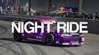
KUTE - HYPERPHONK
KORDHELL - MEMPHIS DOOM
DXRK ダーク, KORDHELL - UNHOLY
KORDHELL, KUTE - DEAD ON ARRIVAL
KORDHELL - 9mm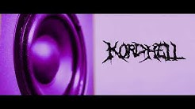
KORDHELL - SCOPIN
KORDHELL - Wig Split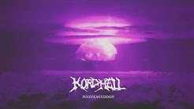
KORDHELL - ZEP TEPI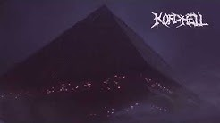
KORDHELL - KILLA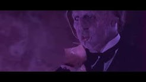
Kordhell - Murder In My Mind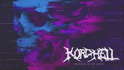
KXNVRA - BLOWIN'
KXNVRA - BURNOUT
KXNVRA - KNIGHT II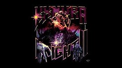
KXNVRA - STAY BACK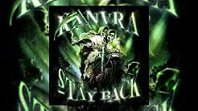
KXNVRA, KXLLYXU - UNDERSTEER(New)
KXNVRA, MC ORSEN - FEARLESS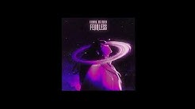
KXNVRA, SHADXWBXRN - INFECTION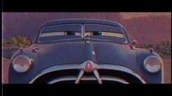
KXNVRA,MC ORSEN - RITUAL
KSLV - Chase
HugoMasked, KSLV - TWIN DRAGONS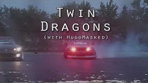
KSLV - Disaster
KSLV - Dynamic
KSLV - Override
KSLV - Phone-In
KSLV - Piracy
KSLV - On the Edge
KSLV - The Dungeon(New)
PlayaPhonk - Army Tank
PlayaPhonk - GODS OF EGYPT
PlayaPhonk - Keraunos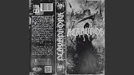
PlayaPhonk - Phonky Town
PlayaPhonk - PURE_MONSTROSITY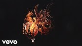
PlayaPhonk - IMMORTAL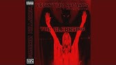
Portwave - Shadow Lady ( PHONK REMIX )
$WERVE - CITY LIGHT$
$WERVE - GAME OF MURDER (KSLV - Override Remix)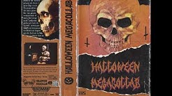
$WERVE - hope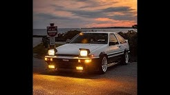
$WERVE - REVENGE(feat. Leftoz)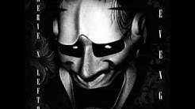
$WERVE - young(REUPLOAD) (NEW VOCALS)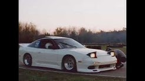
$WERVE, MC ORSEN - MOST WANTED
$WERVE, dazigus - abdulgaming28
SHADXWBXRN - WARLOCK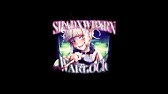
SHADXWBXRN - ADRENALIN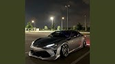
SHADXWBXRN - OPEN WOUNDS
SHADXWBXRN - BLAST
SHADXWBXRN - Collapse
SHADXWBXRN - GUNSHOT
SHADXWBXRN - KNIGHT
SHADXWBXRN - PROPHECY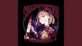
SHADXWBXRN - WARRIOR
SHADXWBXRN, 4WHEEL - KILLSTREAK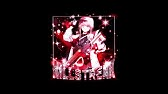
SHADXWBXRN, Archez, KXNVRA - PRINCE OF DARKNESS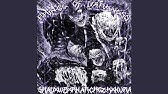